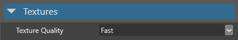

Textures
Warning
Приносим свои извинения за неудобства. Для этой страницы нет перевода на русский язык. Она будет отображаться на английском языке.
Beginner Artist Programmer
Textures are images mainly used in materials. Stride maps textures to the surfaces the material covers.
Textures can add color information to a material — for example, to add a brick pattern to a wall or a wood pattern to a table. The values of the pixels in a texture (texels) can also be used for other calculations, such as in specular maps, metalness maps, or normal maps.
Materials typically contain multiple textures; for example, a material might contain a color texture, a normal map texture, and a roughness texture.
Textures can also be used outside materials; for example, you can draw them directly to the UI, or use them in sprites.
Supported file types
You can use the following file types as textures:
.dds.jpg.jpeg.png.gif.bmp.tga.psd.tif.tiff
Note
- Stride only imports the first frame of animated image files, such as animated gifs or PNGs. They don't animate in Stride; they appear as static images.
- Stride currently doesn't support movie files.
Add a texture
In the Asset View, click Add asset > Texture, then select a template for the texture (color, grayscale or normal map):
Note
Render targets are a different kind of texture, and don't use images. Instead, they render the output from a camera. For more information, see Render targets.
Alternatively, drag the texture file from Explorer to the Asset View:

Then select a texture template (color, grayscale or normal map):

Game Studio adds the texture to the Asset View:

Texture properties
The following properties are common to all textures.

| Property | Description |
|---|---|
| Width | The width of the texture in-game |
| Height | The height of the texture in-game |
| Use percentages | Use percentages for width and height instead of actual pixel size |
| Width | The width of the texture in-game |
| Height | The height of the texture in-game |
| Type | Use Color for textures you want to display as images, Normal map for normal maps, and Grayscale to provide values for other things (eg specular maps, metalness maps, roughness maps). Color textures and normal maps have additional properties (see below). |
| Generate mipmaps | Generate different versions of the texture at different resolutions to be displayed at different distances. Improves performance, removes visual artifacts, and reduces pop-in when using streaming, but uses more memory. Unnecessary for textures always at the same distance from the camera (such as UIs). |
| Compress | Compress the final texture to a format based on the target platform and usage. The final texture is a multiple of 4. For more information, see Texture compression. |
| Stream | Stream the texture dynamically at runtime. This improves performance and scene loading times. Not recommended for important textures you always want to be loaded, such as splash screens. For more information, see Streaming. |
Color texture properties
The following properties apply if you set the texture type to color.
| Property | Description |
|---|---|
| sRGB sampling | Store the texture in sRGB format and convert to linear space when sampled. Recommended for all color textures, unless they're explicitly in linear space. |
| Color key enabled | Use the color set in the Color key color property for transparency at runtime. If disabled, the project uses transparent areas of the texture instead |
| Color key color | The color used for transparency at runtime. Only applied if Color key enabled is selected. |
| Alpha | The texture alpha format (None, Mask, Explicit, Interpolated, or Auto) |
| Premultiply alpha | Premultiply all color components of the images by their alpha component |
Normal map properties
The following property applies if you set the texture type to normal map.

| Property | Description |
|---|---|
| Invert Y | Have positive Y-component (green) face up in tangent space. This depends on the tools you use to create normal maps. |
For more information about normal maps, see the Normal maps page.
Grayscale textures
Grayscale texture use only the R channel of the image (finalRGBA = originalRRRR).
Note
If you add a texture to a scene (as a sprite component), and set the texture type to grayscale, it appears red, not monochrome. This is because the image uses the R (red) channel.
To make the channel monochrome, in the Sprite component properties, set the Type as Grayscale. For more information about the sprite component properties, see Use sprites.
You can use grayscale textures to provide values in material maps. For example, you can use a texture as a blend map to blend two material layers:


Note how the blend map texture corresponds to the patterning on the result.
For more information, see Material maps.
Global texture settings
For instructions about how to access the global texture settings, see the Game Settings page.

| Property | Description |
|---|---|
| Texture quality | The texture quality when encoding textures. Fast uses the least CPU, but has the lowest quality. Higher settings might result in slower builds, depending on the target platform. |